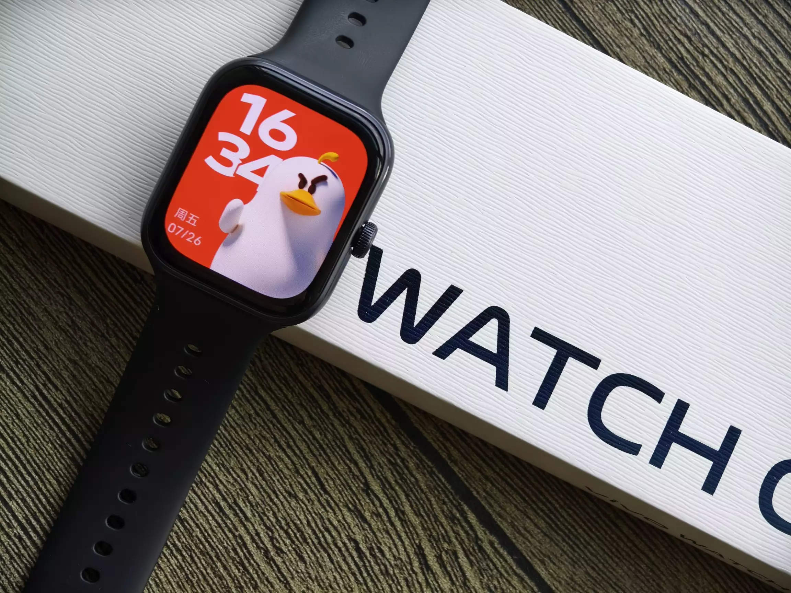
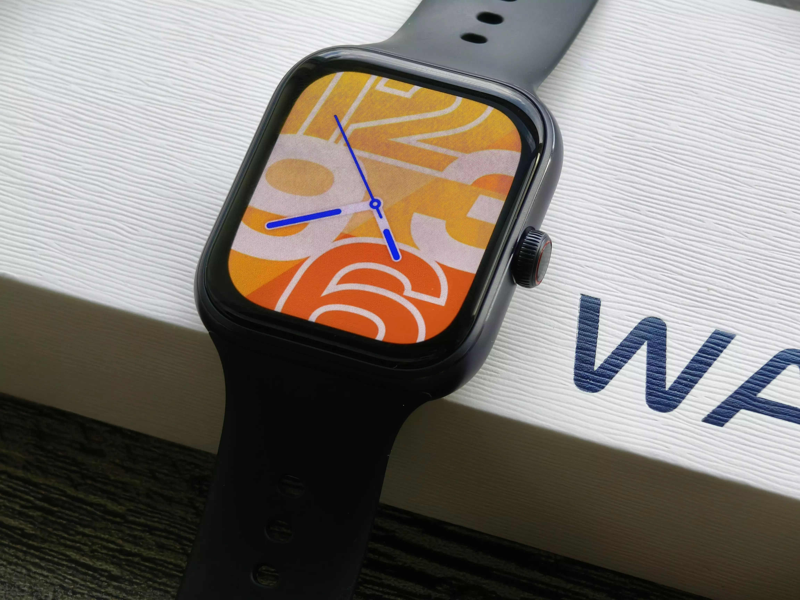
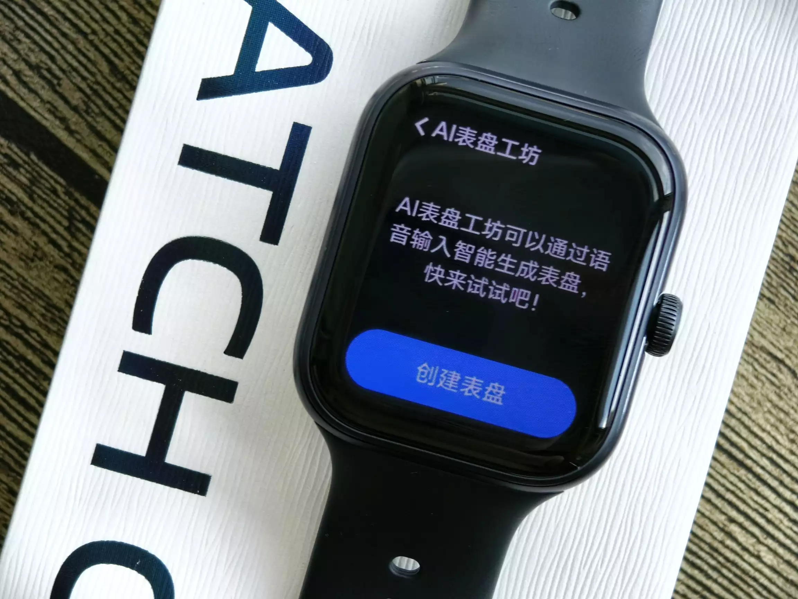
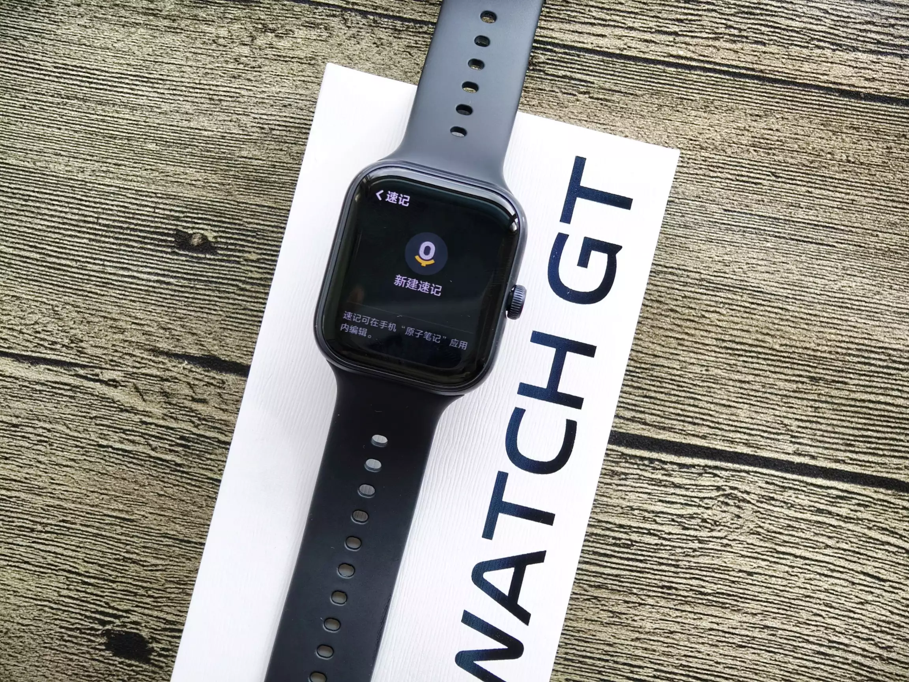
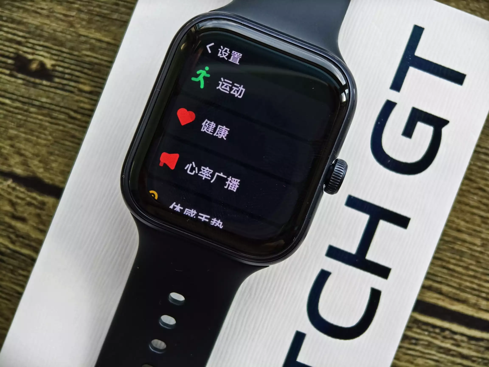
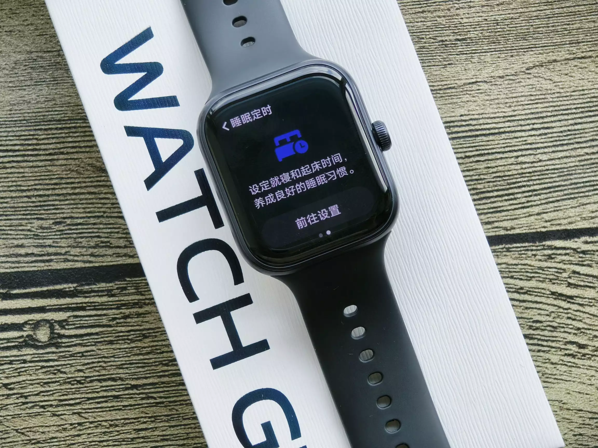

vivo Watch GT 测评
vivo在几个月前发布了ESIM版本的Watch GT，定价749，带ESIM的手表在这个价位性价比很高。但是26号vivo发布了蓝牙版的Watch GT，价格降了270元，首发479送表带入手。

vivo WATCH GT的屏幕采用了2.5D微弧设计，更加自然没有边界感。机身的物理按钮也更加简洁，仅有一颗不锈钢的数字表冠。通过点按或者旋转，可以实现不同的功能。

33g的表身重量，相当的轻量化。可以说，vivo WATCH GT有着智能手表的大屏体验，但是佩戴舒适度上却更像手环。表带同样采用了快拆设计，可以让用户兼顾不同的场合。
在表盘主题方面，vivo WATCH GT除了内置多款时尚、艺术、个性的风格表盘，还可以通过AI生成独属于自己的表盘，这一点体验直接看齐vivo的旗舰手表。

除了AI表盘，在vivo自研蓝河操作系统的支持下，vivo WATCH GT还支持AI速记，用户来不及掏出手机的情况下，也可以及时记录重要的笔记和日程。

同时，vivo WATCH GT支持音乐、导航、闹钟、移动支付、天气等等多个场景的应用。通过应用商店，还可以安装休闲小游戏，即使是雨中等车，也不会无聊。
而在基础的运动模式支持方面，vivo WATCH GT除了跑步、健走、游泳、跳绳等上百种常规运动，还支持羽毛球、乒乓球、网球甚至小众的匹克球、壁球、笼式网球。详细记录的运动时间、挥拍次数、正反球占比等等数据，可以帮助用户更科学的锻炼和提升。

vivo WATCH GT在健康方面通过纵向不止的PPG传感器，支持四通道全天候心率血氧监测，尤其结合vivo自研深度详细血氧多通道融合分析技术，更加提升了全场景尤其是跑步场景的心率准确度。
vivo WATCH GT不仅支持深睡、浅睡、快速眼动等不同状态的睡眠监测，结合手机健康App还支持睡前轻音乐/白噪音助眠。

更让续航焦虑症用户安心的是，vivo WATCH GT支持最长21天的长续航，即使是常规场景正常使用，也可以满足10天的连续使用。用户出差、旅游，完全不需要中途充电。
vivo WATCH GT蓝牙版到手价格仅需499，对于学生等预算有限的年轻用户，以及想要全面智能体验又用不上eSIM功能的用户，还有经常户外活动/差旅出行从而追求长续航的用户，都是值得入手智能手表的绝佳选择。